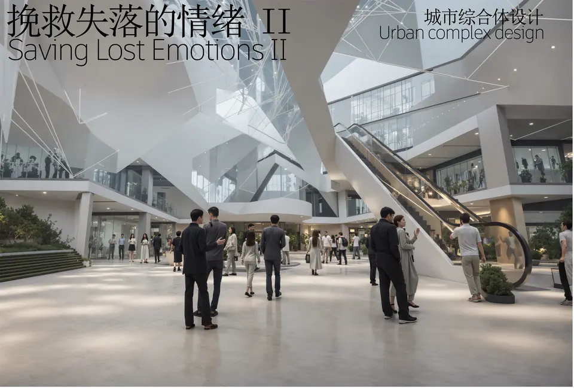
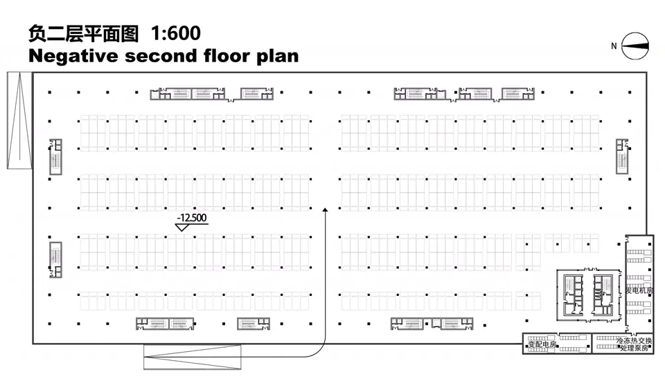
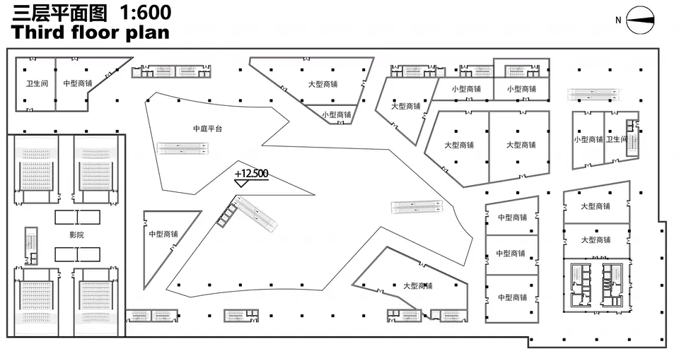
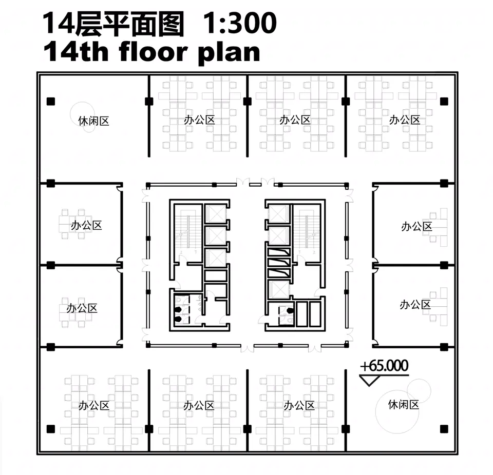
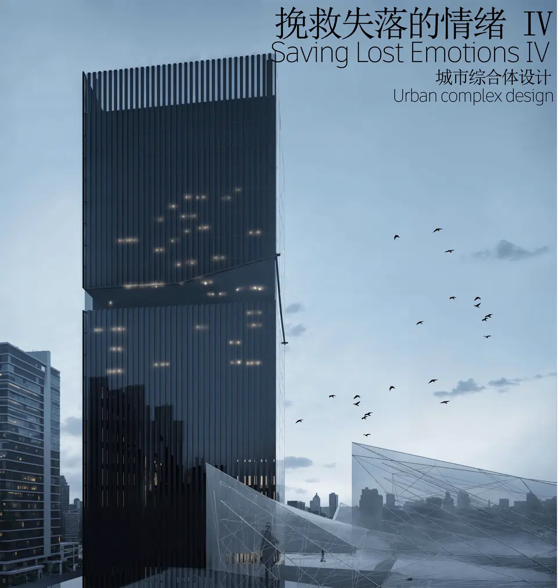
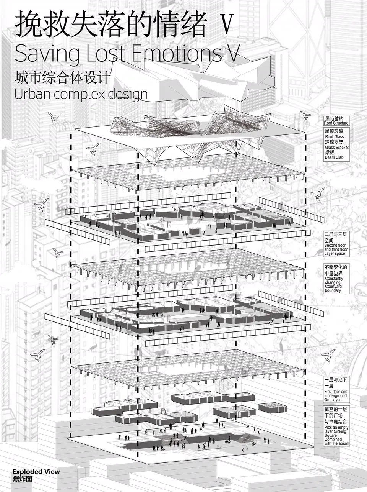
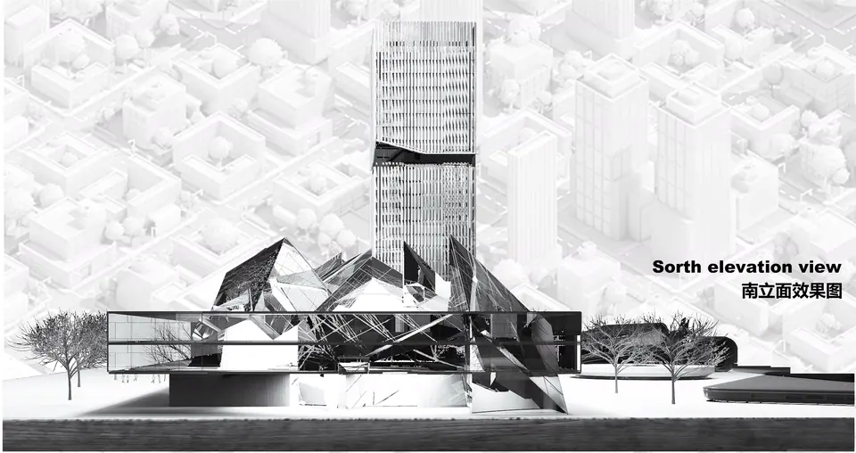

PROJECT 03
城市综合体Urban Complex
挽救失落的情绪：中庭、下沉广场与空中观景台。Saving Lost Emotions: atrium, sunken plaza and sky terrace.
主效果图MAIN RENDERING
综合体全景：塔楼与裙房以开敞的姿态回应城市，中庭与下沉广场共同构成中央公共空间的视觉与活动核心。
An overview of the complex: towers and podium open towards the city, while the atrium and sunken plaza form the visual and social centre of the shared public space.

总平面MASTERPLAN
总平面图与场地放大图：建筑向场地四个方向开放出入口，把城市人流引入中庭。
General layout and enlarged site plan: the building opens entrances on all four sides, drawing city movement into the atrium.


体块生成MASSING
体块生成图按四个阶段记录设计过程：四向开放出入口、局部架空一层、拆分各层楼板，并继续发展不断变化的中庭空间。
Four recorded stages trace the massing process: entrances open in four directions, part of the ground floor is lifted, individual floor plates are separated, and the changing atrium space is developed further.

下沉广场与人物画像SUNKEN PLAZA & PORTRAITS
下沉示意图：地下空间的引入其实也是为了迎合中庭空间的需要——中央下沉广场的出现进一步界定中庭边界，同时下沉的边界更容易让身处其中的游客视线向中央集中。人物画像记录了年轻人的情绪现状：焦虑与抑郁、人际关系的缺失、商业在贩卖焦虑。
Sinking diagram: the underground level serves the atrium — the central sunken plaza further defines its boundary, while the lowered edge gathers every visitor's sight towards the centre. Character portraits record the emotional state of the young: anxiety and depression, missing human ties, and commerce selling anxiety.





各层平面图FLOOR PLANS
各层平面图（1:600）：负二层包含停车与设备用房，负一层包含超市；一层至三层的商业动线围绕中庭展开，三层还标有影院。不规则体块之间形成平台与连桥。
Floor plans (1:600): basement two contains parking and plant rooms, and basement one contains a supermarket. Retail circulation wraps around the atrium from ground to third floor, with a cinema marked on level three. Platforms and bridges connect the irregular blocks.





消防分区FIRE COMPARTMENTS
消防分区图（1:600）标示大空间中庭与各功能组团的分区边界及疏散关系。
The fire compartment plan (1:600) marks compartment boundaries and evacuation relationships between the large atrium and the surrounding functional groups.

高层标准层平面图TOWER STANDARD FLOORS
高层标准层平面图（1:300）：3–13 层为办公区；14 层为办公与休闲区，15 层为办公、会议与休闲区，16 层标有酒店房间与库房；塔楼首层标有服务台与交通核。
Tower floor plans (1:300): levels 3–13 are offices; level 14 contains offices and leisure space, level 15 adds meeting rooms, and level 16 marks hotel rooms and storage. The tower ground floor marks a service desk and circulation core.





高层效果图SKY TERRACE RENDERINGS
两张高层效果图分别呈现塔楼外观与 15–16 层空中观景台，回应「从这里可以看见远方」的设计设想。
The two high-rise views show the tower exterior and the level 15–16 sky terrace, answering the design idea that "from here one can see far".



爆炸图EXPLODED VIEW
爆炸图分解屋顶结构、屋顶玻璃与支架、梁板、二三层空间及不断变化的中庭边界，并呈现一层、地下一层与下沉广场的关系。
The exploded view separates roof structure, roof glazing and supports, beams and slabs, second- and third-floor space, and the changing atrium boundary, while relating the ground and basement levels to the sunken plaza.


立面图与剖面透视ELEVATIONS & SECTIONAL PERSPECTIVE
西立面、南立面效果图与剖透视图：不断变化的中庭边界与挑空的一层、下沉广场与中庭结合，呈现空间的整体逻辑。
West and south elevation views with a sectional perspective: the changing atrium boundary, the lifted ground floor and the sunken plaza reveal the spatial logic as a whole.


